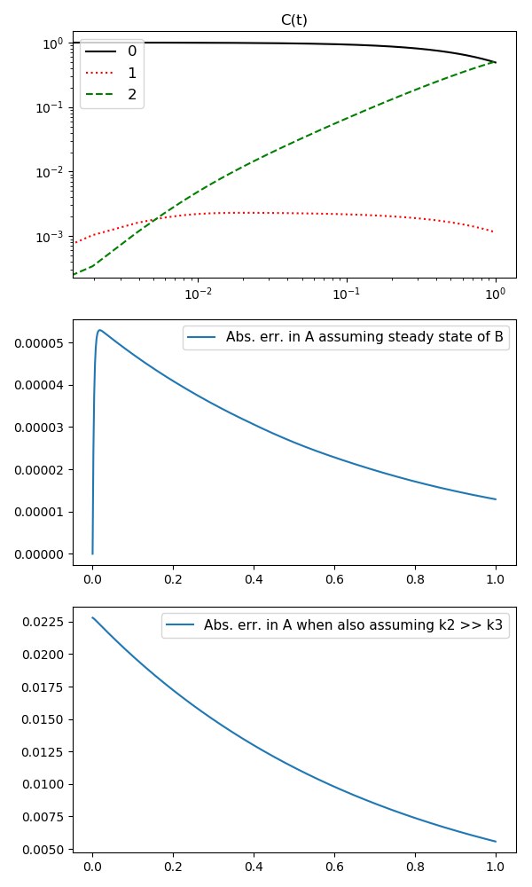

Steady state approximation¶
examples/steady_state_approx.py shows how you can estimate
errors commited when assuming steady state for simple systems. In this
essence it is quite different from the other examples where we have been
investigating the error of the numerical integration vs. an analytic
solution. Here we will do the reverse, we will assume that our result
from the numerical integration is correct (or rather: much more accurate)
compared to our approximately correct analytic expressions.
We will consider the following system:
The rate expressions are from mass action and hence we are conserving mass:
sum of derivatives = 0 (already satisfied)
For initial concentrations of A much larger than B we have:
Steady state assumption for B (\(A_0 \gg B_0\)):
using
we get
where we note:
-
steady_state_approx.integrate_rd(tend=1.0, k1=0.7, k2=300.0, k3=7.0, A0=1.0, B0=0.0, C0=0.0, nt=512, plot=False, savefig='None')[source]¶ Runs integration and (optionally) generates plots.
Examples
$ python steady_state_approx.py --plot --savefig steady_state_approx.png
$ python steady_state_approx.py --plot --savefig steady_state_approx.html